2017
《队长小翼：梦幻队伍》
キャプテン翼 ～たたかえドリームチーム～ / Captain Tsubasa: Dream Team
2017 年推出的官方手游。玩家可收集并培养大空翼、岬太郎、日向小次郎等原作角色，组建专属梦幻队伍，与全球玩家在线对战。 2021 年 9 月起，游戏内开始连载由原作者高桥阳一担任原案与监修的新故事「NEXT DREAM」—— 该篇章已被官方定位为《RISING SUN》之后的正史续作，详见下一条目。
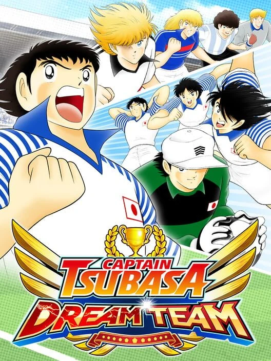
《队长小翼》系列改编游戏横跨近四十年，从 FC 时代的策略足球到近年的动作对战与手机游戏。 此处按手机游戏、主机游戏与集换式卡牌游戏三大类别收录官方授权代表作；主机游戏下再分次时代主机游戏、复古家用机与掌机游戏三组。
iOS / Android 等移动平台上的官方授权手游。
キャプテン翼 ～たたかえドリームチーム～ / Captain Tsubasa: Dream Team
2017 年推出的官方手游。玩家可收集并培养大空翼、岬太郎、日向小次郎等原作角色，组建专属梦幻队伍，与全球玩家在线对战。 2021 年 9 月起，游戏内开始连载由原作者高桥阳一担任原案与监修的新故事「NEXT DREAM」—— 该篇章已被官方定位为《RISING SUN》之后的正史续作，详见下一条目。

キャプテン翼 NEXT DREAM / Captain Tsubasa: Next Dream
承接《队长小翼 RISING SUN FINALS》之后的正史续篇。虽非独立发售的游戏， 而是手游《队长小翼：梦幻队伍》内的故事篇章，但剧情由原作者高桥阳一担任原案与监修、KLab 制作团队执笔， 自 2021 年 9 月起以每月一话的形式连载，并有高桥阳一构思的全新原创角色陆续登场。 高桥阳一在访谈中说明了以游戏而非漫画呈现这段故事的原因：「2014 年起在《RISING SUN》描绘奥运， 之后本想描绘黄金世代的欧洲舞台，但奥运迟迟未完，以漫画形式描绘将是相当遥远的事； 以我的年纪，要全部画完也很困难，因此认为放在游戏中展开更好。」故事舞台移至欧洲， 翼挑战西甲与欧冠，若林源三、日向小次郎、岬太郎等人则在德、意、法各国联赛重新出发。
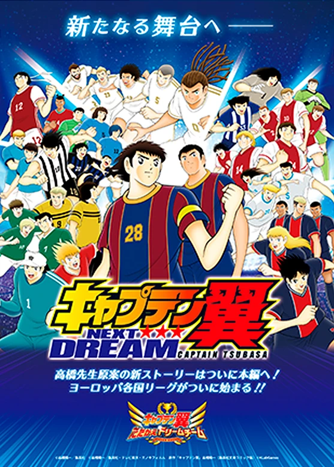
CAPTAIN TSUBASA: ACE
动画正版授权的多人在线足球竞技手游。玩家可操控大空翼、日向小次郎、若林源三等经典角色施展原作必杀技， 在「Dream League（战术编成）」与「Ace Duel（实时操作）」两种模式间选择，体验热血对决。 官方英文名为 CAPTAIN TSUBASA: ACE；该作仅在海外移动端发行，未设日文版名称。
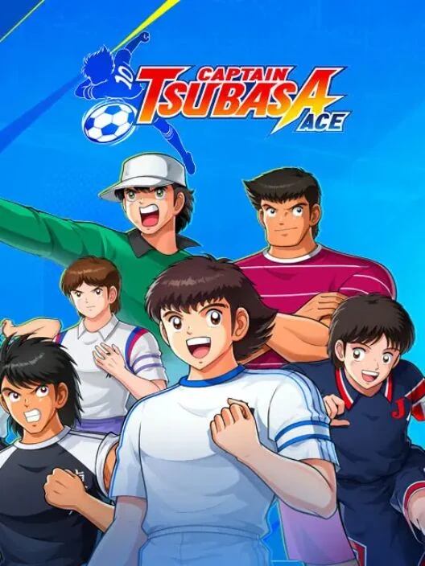
キャプテン翼:My Golden XI【マイイレ】 / Captain Tsubasa: My Golden XI
2026 年 6 月推出的手游新作。玩家挑选喜爱的选手进行「特训」培育，训练过程中的选择 会大幅影响最终能力与习得技能；再将培育完成的选手自由编成，打造专属于自己的「黄金十一人」。 翼的「冲力射门」、日向的「猛虎射门」等原作经典必杀技在游戏中忠实再现， 玩家可指挥这支亲手培育的队伍与强敌展开激战。
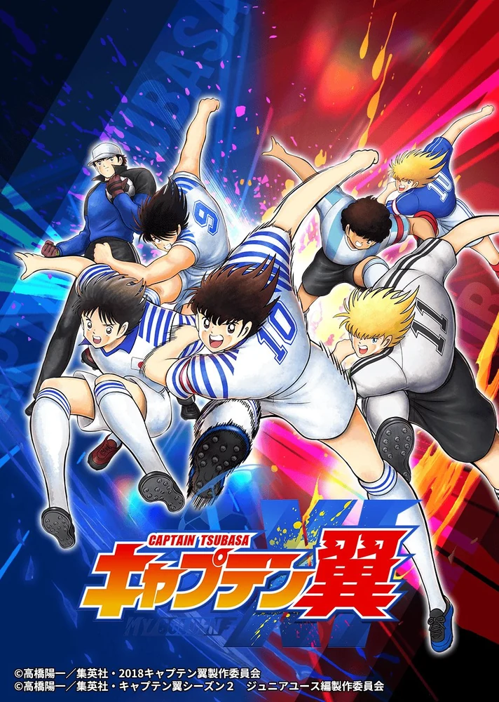
家用游戏机与掌机平台上的《队长小翼》作品。
キャプテン翼 RISE OF NEW CHAMPIONS / Captain Tsubasa: Rise of New Champions
系列时隔十年重返家用机平台。游戏改编自 2018 年版动画，玩家可体验以翼为主角的剧情模式，也能创建原创角色在「新秀的故事」中挑战世界强队。 支持线上联机对战与本地多人游玩。
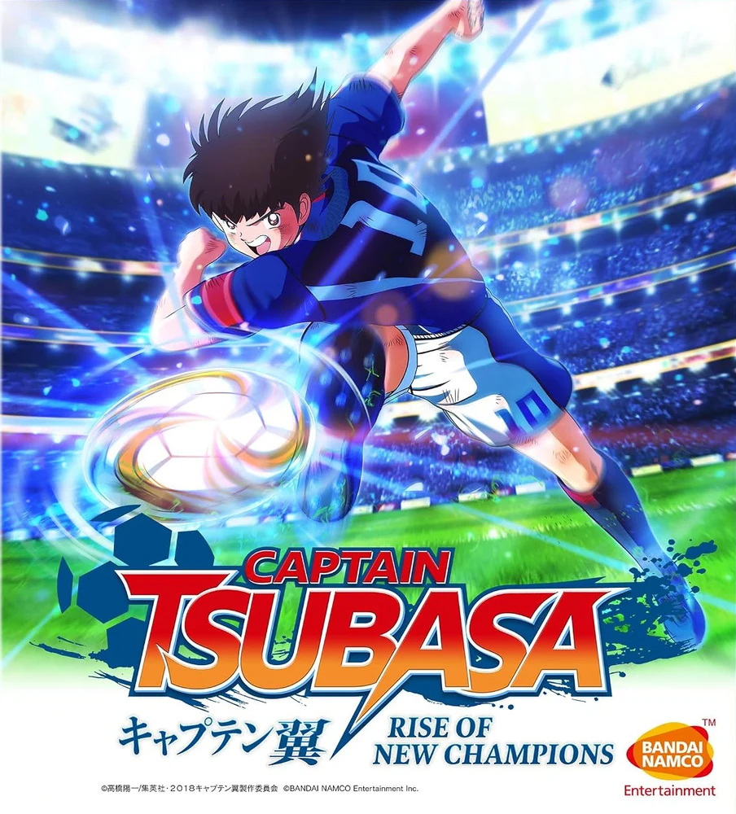
CAPTAIN TSUBASA 2: WORLD FIGHTERS
《新秀崛起》的续作，故事以「世界青年篇」为基础，由高桥阳一老师监修。大空翼率领日本青年队从亚洲青年锦标赛迈向世界青年锦标赛， 收录 22 支国家队与超过 110 名可操作角色。
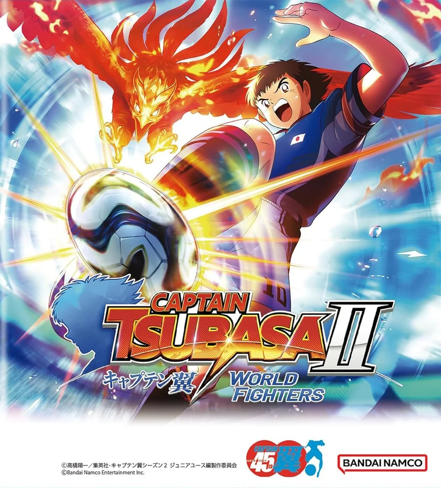
FC / SFC / Mega-CD / PlayStation / Nintendo GameCube / PlayStation 2 等家用机平台上的 11 款作品，按发售年份排序；封面为各作真实盒绘。
Famicom · TCF-TP · Tecmo 1988
Tecmo 开创的「Cinematic Soccer（电影式足球）」首作，品番 TCF-TP。带球遭遇对手时以指令菜单选择传球／盘带／射门／铲球，结果以动画演出呈现；胜利后队员按能力值成长，必杀技消耗「气力」，并附片假名密码续关。音乐由 Keiji Yamagishi 担纲。
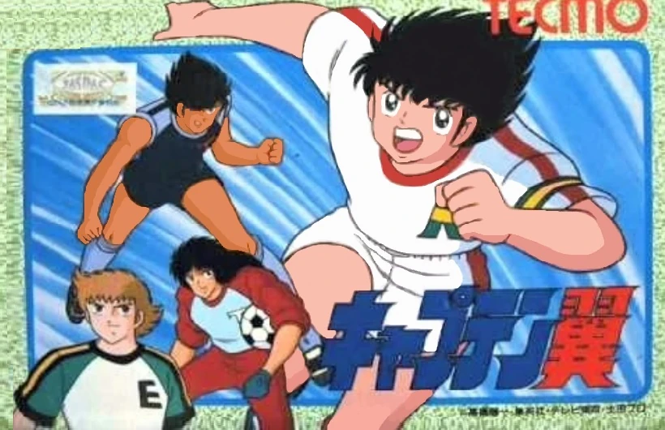
Famicom · TCF-T6 · Tecmo 1990
FC 系列第二作兼最终作，品番 TCF-T6，剧情承接初代并把舞台延伸至巴西与世界杯。系统大幅改良：小地图实时显示双方位置与号码、可自由方向传球、1-2 撞墙配合、假射漏球、守门员可争球或等待、角球自由布阵、等级上限 100。音乐：Keiji Yamagishi / Mayuko Okamura / Mikio Saito。
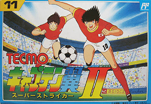
Super Famicom · Tecmo 1992
Tecmo 的 16 位首作，封面版权行 ©高橋陽一／集英社・テレビ東京・土田プロ。延续菜单指令、气力计量与必杀技系统。发售日以 FamiWiki / UVList 一次资料表为准。
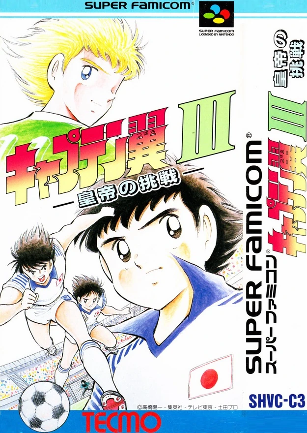
Super Famicom · Tecmo 1993
Tecmo SFC 系列第二作，标题即「职业的对手们」，主题由校园转向职业球员生涯。发售日以 A 级发售表为准；部分中文聚合站误记为 1995 年。
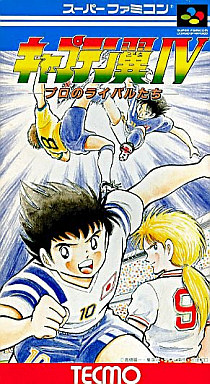
Mega-CD · Tecmo 1994
系列首款 CD-ROM 作品，封面明确标注「メガ・CD専用」，仅日本发行。承袭限时指令菜单 + 动画结果，借 CD 容量实现由动画版声优重新录制的全语音过场；新增「技等级」成长系统，常用指令会提升威力。支持 1–2 人游玩。
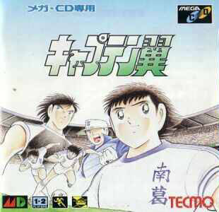
Super Famicom · Tecmo 1994
Tecmo 原系列第 5 作兼最终作。副标题「霸者的称号 Campione」取自意大利语「冠军」，封面出现多国旗元素，呼应各国联赛舞台。
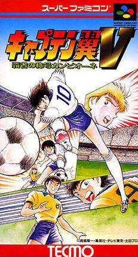
Super Famicom · Bec / Bandai 1995
SFC 上最后一款《队长小翼》，作曲 Koji Yamada。类型由 Tecmo 的指令式改为传统实时足球模拟：2D 画面模拟 3D 视角球场，一对一需快速连打按键判定，无球时亦可做战术操作；必杀技喊招、弧线球演出与进球慢镜头齐备。剧情从 Real Japan 7 对决到世界青年杯亚洲预赛。
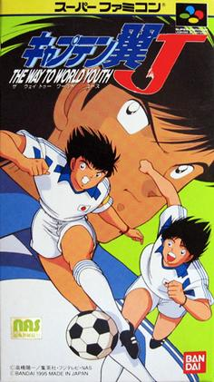
PlayStation · Bandai 1996
Bandai 在 PS 上的《J》系作品，距 SFC 前作约半年。特色是普通足球游戏结合格斗游戏式指令搓招必杀技；分故事模式与友谊赛，育成队伍可跨玩家对战，球员等级上限 100。封面版权行 ©BANDAI 1996，年份据此与 UVList 采信 1996-05-03。
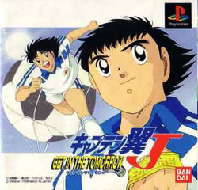
PlayStation · WinkySoft / Konami 2002
开发 WinkySoft、发行 Konami，封面标注 JFA OFFICIAL GOODS、SPORTS SIMULATION GAME 与 ©2002 KONAMI。指令选择式策略足球，含必杀技鉴赏模式与全角色图鉴；2003-05-22 以 Konami the Best 再版。
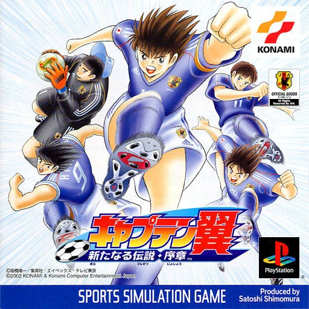
Nintendo GameCube · GKTJA4 · Konami 2002
Konami 的 GameCube 作品，GameID GKTJA4，封面标注「1 人用 スポーツシミュレーション」「使用ブロック数 17」与 JFA OFFICIAL GOODS。采用半即时指令选择，必杀射门以 3D 演出；玩家扮演通过日本代表队入队测试的原创主角，与「黄金世代」一同经受集训。
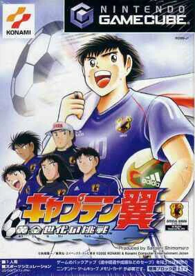
PlayStation 2 · SLPS-25691 · NBGI 2006
开发 Natsume、发行 Bandai Namco Games，编号 SLPS-25691、CERO A、封面 ©2006 NBGI。并非传统动作足球，而是回归 FC 时代的策略／指令式足球：卡通渲染、强调 1 对 1 对决与个人能力，气力值影响过人与射门质量。剧情收录「中学生篇」与「Jr. Youth 篇」。
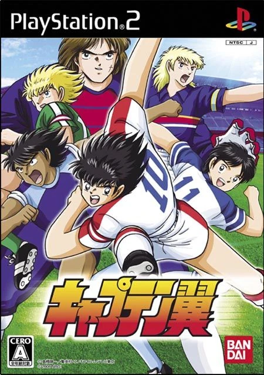
Game Boy / Game Boy Advance / Nintendo DS 等掌机平台上的 4 款作品，按发售年份排序；封面为各作真实盒绘。
Game Boy · DMG-15J · Tecmo 1992
Tecmo 在 Game Boy 上推出的首款《队长小翼》作品，封面标注「対戦型」「1人でも遊べます」、型号 DMG-15J。以操作原作角色进行足球对战为核心，是系列在掌机平台的起点。
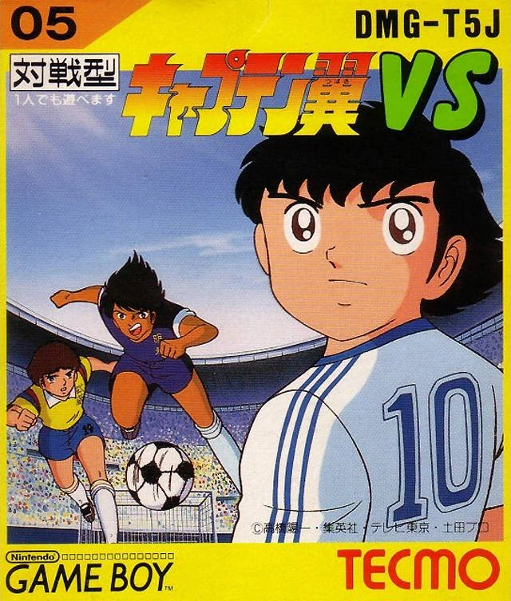
Game Boy · Bandai 1995
Bandai 依《队长小翼J》动画时期推出的 GB 作品，玩家以常规方式操控球员比赛，关键时刻插入特写镜头，并对应 Super Game Boy。封面版权行 ©高橋陽一／集英社・フジテレビ・NAS、©BANDAI 1995。
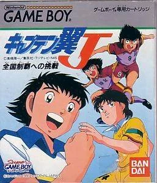
Game Boy Advance · Konami 2002
Konami 的 GBA 作品，封面明确写「1人用 サッカーカードバトルゲーム」与 J リーグ オフィシャルスポンサー。并非足球模拟，而是以集换式卡片下达指令、还原原作经典场面与必杀攻防的卡片对战游戏，基于《ROAD TO 2002》篇。
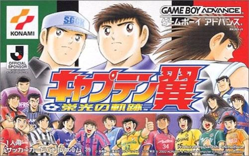
Nintendo DS · NTR-B2BJ-JPN · Konami 2010
漫画连载 30 周年纪念作，系列首登 NDS。封面印 CAPTAIN TSUBASA GEKITO NO KISEKI、©2010 Konami Digital Entertainment、Illustration by Yoichi Takahashi、CERO A。指令式足球含 12 个主线关卡与「剧情条件」机制，全 3D 建模 + 部分语音。日版正式名为《激闘の軌跡》；「New Kick Off」是欧洲版名称。
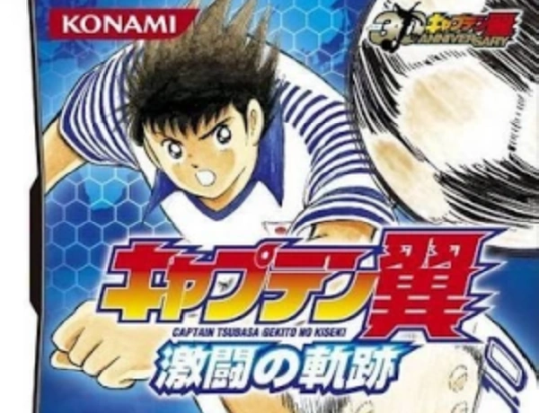
实体集换式卡牌（TCG）等非电子游戏形态的《队长小翼》作品。
官方商品名：キャプテン翼 トレーディングカードゲーム「CHAMPION OF FIELD —王者のフィールド—」· 发行：KONAMI（科乐美）
KONAMI（科乐美）于 2002 年 3 月发行的《队长小翼》主题实体集换式卡牌游戏，官方名「CHAMPION OF FIELD —王者のフィールド—」。 依托漫画《ROAD TO 2002》篇与 J.LEAGUE 官方授权，把《队长小翼》的角色与真实 J 联赛球员放进同一套卡牌对战； 以球场 5×9 网格、6 面骰、球权指示物，以及「成本（Cost）＋ 战斗点数（BP）」机制模拟足球比赛。
与 GBA 游戏《栄光の軌跡》（2002-02-21）为同一企划的跨媒体联动，另有规则同源的姊妹作《パーフェクトイレブン》（2002-07，J 联赛官方）。 本知识库已建立专页，分「商品情报 / 玩法指南 / 卡牌图鉴」三版面，收录玩家扫描卡面 116 张（起始卡组 60 ＋ 补充包 56）。
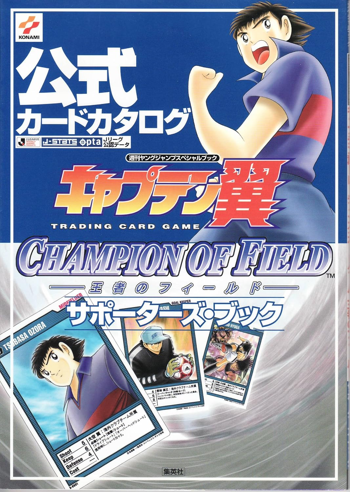
官方商品名：キャプテン翼 FOOTBALL CARD GAME · 发行：TAKARA TOMY（多美）
TAKARA TOMY（多美）发行的《队长小翼》主题实体集换式卡牌游戏，官方名「キャプテン翼 FOOTBALL CARD GAME」（简称 FCG）。 以攻防数值（Def / Cover / Asst / Off）、ガード / ガッツ / シュートポイント等专属机制还原足球对战。 商品分为扩充包第1～3節（CT-01 / CT-02 / CT-03）与起始卡组（CTD-01 南葛SC編、CTD-02 明和FC編），另以赛事配布形式发行 CT-PR。
全 256 张卡片按官方体系分为系列（CT-01/02/03、CTD-01/02、CT-PR）、カテゴリ（キャラ / シュート / アクション）、 稀有度（UR / EXSR / SR / EXR / R / N / ST / PR 共 8 种）。官方另提供规则表、情报表、玩法说明 PDF 与「対战動画」等玩法资料。 本知识库已建立该弹专页，收录全 256 张卡片原图与官方卡片数据（日文原文，未翻译），并附可联动的详情弹窗与卡片别 FAQ（105 问 / 77 卡）。
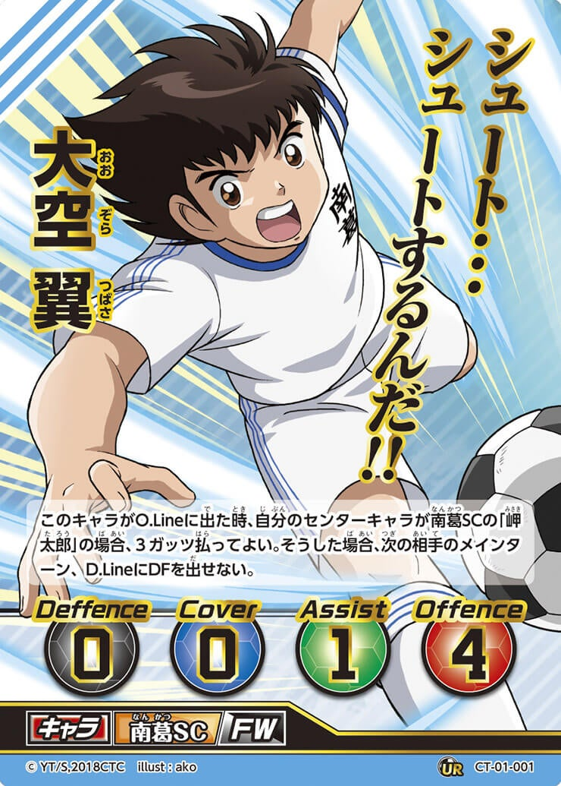
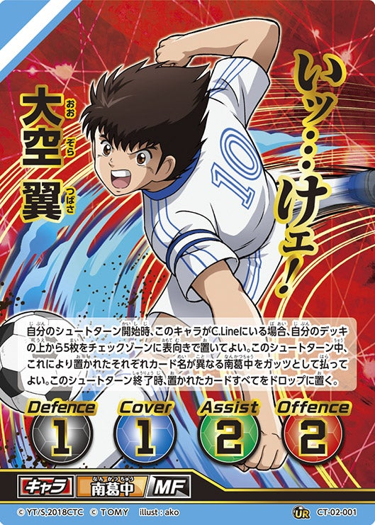
官方商品名：ブースターパック『キャプテン翼』· タイトル区分：キャプテン翼 / 作品番号：CTB
武士道（Bushiroad）发行的集换式卡牌 Weiß Schwarz 中，以《队长小翼》为主题的补充包， 官方商品名为「ブースターパック『キャプテン翼』」，作品番号 CTB，卡号形如 CTB/W118-001。 官网标注「タイトル区分：キャプテン翼」，版权页同时列出 2018 年版《队长小翼》与 《队长小翼 第二季 青少年篇》两季的製作委員会，可知本弹收录这两季动画内容。 卡种为普通 100 种＋平行闪卡 100 种，稀有度自 SP / RRR / SR 至 RR / R / U / C / CR 分档； 另有 9 名声优烫金签名卡（9 种）、5 张全新绘制插图，以及每盒随机封入 1 张「特製先攻後攻カード」的盒装特典。
除补充包收录卡外，官方另以赛事配布形式发行 3 张 PR 卡（2024 年 11–12 月店铺大会、WGP2024 标题杯上位奖）， 非补充包收录。本知识库已建立该弹专页，含商品情报 / 玩法指南 / 卡牌图鉴 / 优胜者卡组配方四个版面： 收录 203 张卡面与官方卡片数据（日文原文，未翻译）、可联动的详情弹窗，以及官方公布的 9 组赛事优胜牌组。
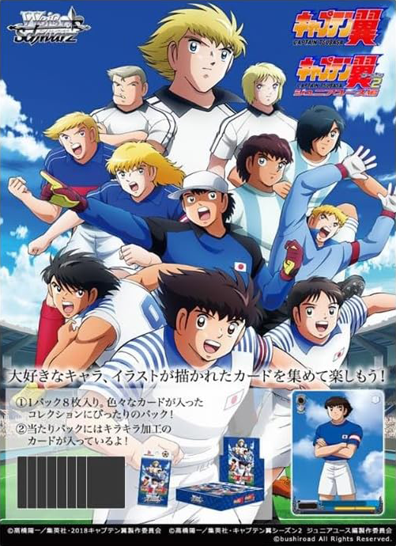
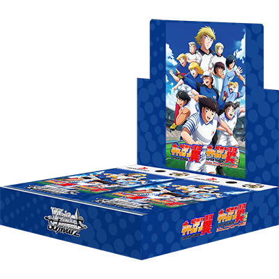
备注：「复古家用机」与「掌机游戏」合计 15 款 1988–2010 年的作品，均按发售年份排序，封面采用各作真实盒绘。其中 Tecmo 的 FC 系列为 2 作、SFC 系列为 3 作，加上 Bandai 的 SFC《J》1 作，SFC 合计 4 作。
关于 NEXT DREAM：它并非独立发售的游戏，而是手游《队长小翼：梦幻队伍》内的故事篇章。 因该篇章由原作者高桥阳一担任原案与监修，并经官方定位为《RISING SUN》之后的正史续作，故在此单列条目以便查阅。